Karsten Held
C# & Web Developer
SharePoint Specialist, Freelancer & Contractor
I'm a freelancer and contractor with over 15 years of work experience. Starting with Visual Basic in 1998, I worked with C#, Java, and JavaScript. I focus on the MS Office 365 / SharePoint stack. I help my customers with the migration and integration issues of the Office 356 / SharePoint platform. If required, I build mobile apps and intranet solutions that connect internal systems, different departments and external partners. My area of expertise is business process automation, process optimization and data integration across company and department borders. To achieve first-class modern solutions I also use state-of-the-art open source frameworks. I'm also an Excel and VBA expert.
Download CV
Work

M-OnSite mobile app
A mobile app for iOS and Android, that helps keeping track of checklists while setting up speaker rooms for congresses. The app is loaded via a QR code and the AppGyver Scanner and works also offline. When online, the checklists status is synched with a server. The project manager overlooks the setup status on his iPad and gives orders via chat.
The solution runs with a SharePoint backend so that all data is also available on the companies intranet.
Created with HTML5/JS/CSS3 using the AppGyver Framework based on Steroids/Cordova.
Client Information
M Events provides project management and state-of-the-art technology for congresses and events.
Visit HomepageServices
Application Development
Application design, prototyping and programming using C#, JavaScript, WPF/XAML and WinForms. Office 365 Apps in the cloud (Office365 App Model) or local Office Solutions using VSTO/COM Add-Ins or VBA.
SharePoint Solutions
Design, configuration and rollout of SharePoint solutions. WebPart and App Development in C# and JavaScript. Integration with other LOB solutions. Upgrading of MS Access and ASP.NET solutions.
Mobile Development
Mobile Business Apps for iOS and Android using the AppGyver Framework with HTML5/JS/Cordova under the hood. Apps are downloaded via a scanned QR code using the AppGyver scanner app or can be published to the official App Stores.
Web Design & Development
Responsive websites using HTML5, JavaScript, CSS3, ASP.NET, MVC4, JQuery and frameworks (Bootstrap, Foundation, Ember, Knockout, AngularJS). Complete Web-Design.
Experience
-
Now
-
Sep 2016 - Apr 2017
Freelance SharePoint Consultant @ Orbit GmbH, Bonn for Telekom Digital Division
UX Design / Programming of Product Inventory System. Development of SharePoint site provisioning solution (Provider Hosted App, CSOM, C#, ASP.NET).
-
Oct 2015
Freelance Software Architect @ m|events, Munich
Development of a mobile app (iOS & Android) that enables the use of mobile onsite checklists for the setup of congresses with SharePoint backend.
View Project -
Sep 2015
Freelance SharePoint Consultant @ AUC Akademie der Unfallchirurgie GmbH, München
Initial rollout of SharePoint with migration of existing fileshares to Office 365 / SharePoint Online.
-
Jun 2015 - Aug 2015
Freelance SharePoint Consultant @ m|events, Munich
Development of a project management tool for SharePoint/Office365 using workflows. Creation of a cloud-synced Excel solution for offline scenarios.
View Project -
May 2015
Freelance Developer @ WhizzyTools, Dresden
Development of End-To-End AES256 encryption solution with SharePoint backend for Web-Apps and Excel-based solutions using Crypto.js and VBA-WEB.
View Project -
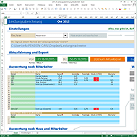
Apr 2015
Excel Consultant @ Carl GmbH, Munich
Development of Excel-based Solution for mobile time reports with Android tablets and export for tax advisor.
View Project -
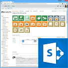
Jan 2015 - Mar 2015
SharePoint Consultant @ m|events, Munich
Structuring and redesign of the intranet with Office 365 / SharePoint Online.
View Project -
May 2014 - Jun 2014
Freelance Excel Consultant @ WhizzyTools.com
Design and development of an Excel-based time tracking solution.
View Project -
Jan 2014 - Feb 2014
Freelance Designer
Corporate Design Manual for WhizzyTools.com: Logos, Icons, Color Themes and Fonts.
View Project -
Jan 2013 - Dec 2013
Freelance Front-End Designer/Developer @ Avalain, Budapest
UI design and programming of DesktopTracker in Java using Vaadin framework.
View Project -
Jun 2012 - Dec 2012
SharePoint Consultant @ Communardo, Dresden
Design, specification and customization of large-scale SharePoint intranets for customers like Axel Springer AG and Voestalpine Group.
-
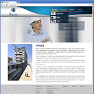
Jan 2012 - Mar 2012
Freelance Web Designer/Developer @ Bencer, Shanghai
Refresh of corporate design and redesign of website with focus on mobile and high-resolution devices.
View Project -
Oct 2011 - Nov 2011
Freelance Software Architect @ Osyon GmbH, Berlin
Design and prototyping of a cloud-based task management utility.
View Project -
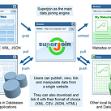
Apr 2011 - Jun 2011
Freelance Software Architect @ Osyon GmbH, Berlin
Concept for an open cloud-based table storage and joining website.
View Project -
Feb 2011 - May 2011
Freelance Web Designer/Developer @ Bencer, Shanghai
Webdesign and programming of a website for Bencer's new 'Construction' division.
View Project
-
-
2010
-
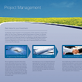
Nov 2010 - Dec 2010
Freelance Designer @ Bencer, Shanghai
Design of a flyer that features the companies services.
View Project -
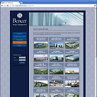
Jan 2010 - May 2010
Freelance Web Designer/Developer @ Bencer, Shanghai
Design and programming of the company website. Development of an automated photo upload tool.
View Project -
Mar 2009 - Apr 2009
Freelance Developer @ financial.com, Munich
Customization of a custom Excel Add-In (VBA) that retrieves data from a Thomson Reuters terminal.
-
Nov 2009 - Jan 2010
Freelance Software Architect @ Vescore, Munich
Design and specification of the next generation portfolio management tool.
-
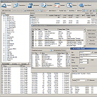
Aug 2006 - Aug 2008
Head of Application Services & Support @ Vescore, Munich
Design & programming of portfolio management tools in C# (WinForms) and Excel (C#, C++, VBA).
View Project -
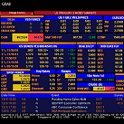
Jan 2004 - Jul 2006
Junior Portfolio Manager @ Vescore, Munich
Management of 4 global investment funds. Development of several Excel-based trading-tools using a Bloomberg Terminal.
-
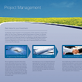
-
2004
-
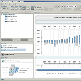
Jan 2001 - Dec 2003
Developer @ vescore.com
Design & programming of a web-based Java (Swing, WebStart) application that visualizes complex model data.
View Project -

Mar 2000 - Dec 2000
Developer @ Dr. Grob & Partner, Winterthur
Prototyping of a bridge and tunnel management system based on the swiss bridge and tunnel database in Visual Basic.
-
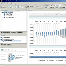
-
Want to know more?
Download CV

{kind=link}
{kind=link}
{kind=link}
{kind=link}
{kind=link}
{kind=link}
{kind=link}
{kind=link}
{kind=link}
{kind=link}
{kind=link}
{kind=link}
{kind=link}
{kind=link}
{kind=link}
{kind=link}
{kind=link}
{kind=link}
{kind=link}
{kind=link}
{kind=link}
Contact
Karsten Held
Rothenburger Strasse 32
D-10099 DRESDEN
+49 176 70861679
karstenheld3@gmail.com